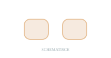

PASO 02 / SISTEMA DE QUILLAS
Setup de quillas
¿Sistema de quillas?
Elige entre Futures y FCS I. Después se abrirá la página de diseño correspondiente.
Futures
Una caja de quilla continua con fijación mediante un tornillo.
Elegir sistema ↗
FCS I
Dos plugs separados con fijación por tornillo.
Elegir sistema ↗